Playing kMoria
screenshots are from v. 0.13 - preferences screen has changed in 0.14
the premise
Hopefully you're familiar with rogue-like games
already. They are text-based games which have a familiar premise
--- wander around in a dungeon, collect treasure,
beat up bad-tempered critters, try to finish a quest.
Your goal in this game is to defeat the Balrog, who lives deep
in the mines of Moria.
Starting Out
When you start the application you will first have to
generate a character. (Follow
that link to see out how it's done.)
Then you will start out in the town. If you are not familiar with
Moria or want a refresher, first read the very brief intro to what you see on the main
screen. When you've looked over that, come back here and I'll
tell you how to move around and do things.
Moving Around
(If you have played iRogue or iLarn, you can skip this section, since movement
in kMoria is similar.)
First, imagine that the screen is a compass. At the top of the screen
is north. Imagine that this compass is divided like a pie into eight
slices: N, NE, E, SE, S, SW, W, NW. The slices meet in the center of
the screen. Tap within a slice, and that is the direction you will
move in. (If you have the "relative move" preference enabled, the
center of the pie is at your "@"; otherwise the pie is centered on the
screen regardless of where the "@" is located. The rest of these
instructions will assume the latter.)
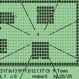
Ok. You got the pie? I am going to complicate it now. If you
tap too close to the center of the screen, nothing will happen.
Moving outward... If you tap moderately close to the center of the
screen, you will move one square at a time. If you tap far from the
center of the screen (near the edge of the screen), you will move
several squares -- you keep moving until you are adjacent to something
"interesting".
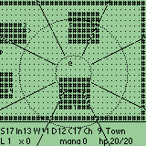
So there's a pie of what-direction-you-move, and there are some
concentric circles of what-happens-when-you-tap. You can adjust the
size of these circles via the Preferences menu
item, depending on what you think is deserving of more screen
real-estate.
Oh, yeah: to attack a monster "hand-to-hand", with whatever weapon
you're currently wielding, you just try to move onto its square. If
it is immediately to your west, tap on the west side of the screen,
etc., and you should see a message such as "You hit the Large White
Snake. MORE" (if it does say MORE, tap once anywhere to see the next
set of messages).
If you don't want to attack hand-to-hand; you can stand at a greater
distance and cast spells, throw/shoot missile weapons, and aim magic
wands.
Keyboard users: type hjklyubn to move around, HJKLYUBN to run.
(You can also use cursor keys, if you don't mind moving like a rook
instead of a queen.)
'Show' menu
The Show menu has commands that show you information. None of these
commands will take up a turn in the game.
Some menu items have a character in parentheses. These commands
can performed by writing that Graffiti character (in addition to using
the menu).
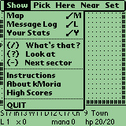
go to the Show menu
- Map /M
- In the middle part of the screen, you can only see a part of the
level that you're currently exploring. The "Map" menu item will
display an Overview Map of the entire level.
This map has two modes - the character mode shows anything that
seems important (such as you, staircases, treasure and other objects,
etc.) but it doesn't really show how to get there from here. The
outline mode shows the rooms and tunnels that you have explored, so
you can see how to get there (but it does not show the items that are
there). Tap on the Mode square to change mode and tap on the Exit
square to exit the map. Tap on the @ square to make your own
position blink (if currently visible).
Because dungeon levels are so large, the map has two halves: left
and right. It will always start up showing the half that you are in,
but if you are viewing (say) the left half, you can tap on the right
side of the screen and the map will change to the right half. There is
some overlap in the middle.
Keyboard users: You can also type M to get to the
Overview Map. In the map: m to switch between ascii and
graphical mode; space to view the other half of the map;
@ to make your character's location blink;
x to exit.
- Message Log /L
- The message log shows the last n messages that appeared on the
screen, in case you missed one.
Keyboard users: pageup/pagedown to scroll, space
to scroll down; hit return to exit
- Your Stats /Y
- This shows more-detailed information about your character. It is
the same as the final "Your Character" screen in character generation. You can change
your name here, and see how much experience is required for the next
experience level. Tap the lower half of the screen to toggle the
information displayed there.
Keyboard users: space to toggle the information; hit return to exit
- (/) What's that?
- Tap on any symbol to identify it. If it is a monster, you
will see a summary of everything your character (and his/her
predecessors) remembers about this kind of monster.
You can also write a symbol, such as "p", to see a summary of
all monsters you've encountered that were represented by "p"; tap Next
to view the next monster of that type.
Keyboard users: n for next monster; scrolling as usual;
hit return to exit
- (?) Look
- Look in a given direction. This will print anything interesting
that you see there, and highlight the symbol on the screen that is
being described. If a monster is being described, you can tap the "R"
button to see the information you remember about the monster. Tap on
the screen to go on to the next interesting item, or tap the "X"
button to exit the look mode.
Keyboard users: r to recall; space for the next item;
x to exit
- (-) Next Sector
- This will slide your view of the dungeon in the direction that
you indicate (so that you can look at the next screen to the east, for
example).
- Instructions
- ...Don't exist yet.
- About kMoria
- This is the "About" screen that you find in all normal applications.
It reports the version you are running, in case you need to know,
as well as the license and history of the game.
Keyboard users: hit return to exit
- High Scores
- This allows you to view past high scores (without dying). There
might be many pages of scores if you have played a lot.. tap the More
button to go to the next page. (The down hardware button will also go
to the next page, and the up hardware button will go back to the
beginning.) Tap the "Done" button when you are tired of looking at
them.
Keyboard users: scrolling as usual, or use < and >;
hit return to exit
- Quit
- This will kill your current character (after the obligatory "are
you SURE?") and allow you to start over, after viewing your tombstone
and the high scores list.
'Pick' menu
The Pick menu has all the commands that present a list of things
for you to pick & choose.
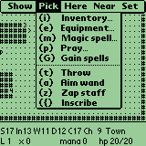
go to the Pick menu
- (i) Inventory
- This will take you to the inventory dialog.
- (e) Equipment
- This will take you to the equipment dialog.
- (m) Magic spell
- If you are of an appropriate character class, this allows you to
cast a magic spell. Some spells have directional effects.
Keyboard users: (1) In the "Read Which Book?" form, you can select
books by letter, e.g. a to read your first book. (2) In the
"Recite Which?" form, you can select spells by letter, e.g. a
to cast Magic Missile.
Button users: (1) If you use any hardware buttons, you can
select books by app button, e.g. Datebook to select your first
book, Memopad to select your fourth book. (2) You can
assign spell buttons via Set-->SpellBtns
on the main menu.
- (p) Pray
- If you are of an appropriate character class, this allows you to
say a prayer. Some prayers have directional effects. All notes for
(m) apply to (p).
- (G) Gain spells
- If you are able to learn spells or prayers, this command will let
you do so. Wizards get to select a new spell, whereas priests'
prayers are chosen for them at random.
Keyboard users: in the "Learn Which Spell?" form, you can
select spells by the letter listed, e.g., type a to learn Magic
Missile.
- (t) Throw
- Throw an object in your inventory.
- (a) Aim wand
- Fire a wand.
- (z) Zap staff
- Fire a staff.
Keyboard users: throw, aim, zap are like the inventory screen.
- ({) Inscribe
- Write an inscription on an item.
Keyboard users: select by letter, hit return, type inscription,
hit return.
'Here' menu
The theme of the Here menu commands is things that you do right
where you are, not in a particular direction
(as opposed to the Near menu of directional commands).
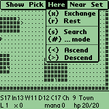
go to the Here menu
Certain commands can be repeated n times. (rest, search,
open, force, spike, dig, disarm.) To do this, write a number (1 to
99). Then write the letter of the command. You will perform the
command that many times unless the situation changes (e.g. if a
monster attacks you, you stop).
In addition, if you want to do a command "again", there is
a special unlisted command "g" that will repeat whatever you
just did: for example, "cast a magic missile to the northwest" or
"throw/fire an arrow to the south" or "force the door to the east".
- (x) Exchange
- Before trying this, you should acquire two weapons (call them A
and B, perhaps they are a dagger and a shovel), and you should wield
one of them; if you view your equipment you see that A is your primary
weapon. Then try Exchange. Now A is your spare weapon and you have
no primary weapon. Wield B. B is now your primary weapon, and
Exchange will switch between B and A. You can see that, once you have
your equipment set up properly, this command can save you some hassle.
- (R) Rest
- Do nothing for a while, to regain hit points and mana faster than
you would while exerting yourself. This command can take a numeric argument to rest for N turns or until
interrupted. If you did not give it an argument, you will have a choice
of resting either a fixed number of turns or until you are fully rested.
Keyboard users: in "Rest how many turns?" type 0, 1, 2, or 3
to select 0, 10, 20, Max.
Button users: in "Rest how many turns?" the 4 application buttons are
bound to the four choices, e.g. Datebook for 0.
- (s) Search
- Search for hidden doors and traps, for a turn. This command can
take a numeric argument to search for N turns,
or until interrupted or something is found in one of the 8 surrounding
squares.
- (#) Search mode
- When search mode is on, you automatically spend an extra turn in
searching every time you perform an action. (So when you run down a
corridor in search mode, you move one square, then search for one
turn, etc.) This mode will be terminated automatically in appropriate
situations, such as when you notice a monster.
- (<) Ascend
- Climb an up staircase < to the level 50 feet above.
- (>) Descend
- Climb a down staircase > to the level 50 feet below.
'Near' commands menu
These commands all require you to choose a particular square near
(adjacent to) you. When you issue the command, you will be given
pie-lines to indicate that you should tap in a slice to choose a direction.
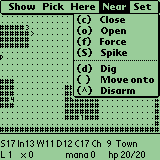
go to the Near menu
- (c) Close
- Close an open door ' (unless it is broken).
- (o) Open
- Open a closed door + (your attempt can fail if it is
jammed or locked). This command can take a numeric
argument to attempt opening up to N times, or until interrupted.
- (f) Force
- Force open a closed door + (your attempt may fail). This
command can take a numeric argument to attempt
opening up to N times, or until interrupted. You may be thrown off
balance which will interrupt your effort, but you can use the g
command to "do it again".
- (S) Spike
- Jam a closed door + with iron spikes (if you are carrying
some). This command can take a numeric
argument to jam with N spikes, which are better than 1 (but less
than N times as good; there is a point of diminishing returns).
- (d) Dig
- Dig in rubble :, or wall #, or weak mineral seam
%, or valuable metal vein $. This will be highly
ineffective unless you are wielding an appropriate implement
(e.g. pick or shovel) as primary weapon. (If you have such an
implement and just forgot to wield it, kMoria will usually remind you.)
This command can take a numeric argument (and
you will want to give it one, like 10 or 20) to dig for N turns or
until interrupted or the square is clear.
- ( ) Move onto
- Type a space " " if you want to move onto an adjacent tile
without picking up a item that is lying there.
- (^) Disarm
- Disarm a trap. This command can take a
numeric argument to attempt disarming up to N times,
or until interrupted. It is possible to set off a trap accidentally while
attempting to disarm it..
'Set' commands menu
These commands don't take a turn. They let you set various options.
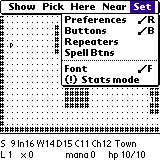
go to the Set menu
- Preferences /R
- The Preferences dialog allows you to customize various options: the relevant
standard options from Moria plus a few extras.
- Buttons /B
- The Buttons dialog allows you to customize the hardware buttons.
- Repeaters
- You can set certain repeatable commands (search, dig, open,
disarm, force) to auto-repeat if you like, via this dialog. Just
check the boxes of the desired commands. Suppose you check "disarm";
then whenever you try to disarm a trap, unless you have already given
it a count, it will automatically use a count of 99. To abort, tap
the screen or hit a bound button (keyboard users should be
able to hit any key to interrupt).
- Spell Btns
- Suppose you have bound a button to "magic" - you hit that button
to cast a spell or to pray. That takes you to the screen listing all
of your books (there can be up to 4 of them). The books are now
conveniently linked to the four main hardware buttons - once you are
on that screen, hit Datebook for the first book, ..., or MemoPad for
the fourth book. Then you are on the spell/prayer screen...
Well, you can choose to bind the spells and prayers to
hardware buttons also, via the Spell Btns dialog.
- Font /F
- This will toggle between the two available font sizes: normal,
and flyspeck. The flyspeck font will allow you to see more of the
dungeon level at a time and (if your eyes and lighting are good
enough) this is probably the better one to use.
Other Menus
There are menu options in a couple of other screens in this game.
In your inventory screen, there is an option "Un/Compact". This
will switch between giving each item a single line (and probably
truncating its description), or giving each item enough lines to show
its full description (well, to a maximum of two lines, but that should
really be enough). There is also an option to show weights. If you
have a character who is not very strong, and you reach the limit of
what you can carry, this might be useful to help decide what to
discard.
In the store screen, there is a similar Un/Compact option that
will switch between giving each item one line or two lines (regardless
of description length). There is also an Un/Haggle option. This
option turns off Haggling. If you don't mind suffering a mark-up
in return for not having to bargain with the shopkeeper, try this
option. (If you like to get the best possible price for an item, or
find the comments amusing, you can ignore this option.)
Inventory
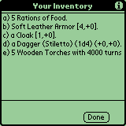
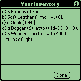
write i to see your inventory
Adventurers tend to collect things. Where do they go? Your pack.
How do you do something with them once they are there?
To do something to an item in your inventory, select "Inventory"
from the Commands menu (or write "i", lower-case I.)
A window will pop up with a list of your inventory. Select any item,
either by tapping, or by writing its index letter (b in the
example shown below). This should cause some buttons to appear,
labeled with relevant actions. Tap the button of your choice to
perform that action.
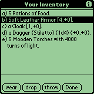
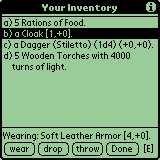
we select b and then tap wear
Note that performing these actions takes time, and you can't see what's
going on out there because you have your head in your pack or something.
You can switch from the Inventory to the Equipment screen by
tapping on the "[E]" in the lower right corner; this doesn't take any time.
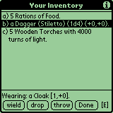
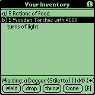
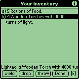
keep tapping wear/wield until everything is equipped!
finally, tap [E]...
When you are finished, tap Done.
Keyboard users: type an index letter, e.g. b to select
the second item. Hit return (or type 1 for the first button)
to wear/wield it. You can type 2 for the "drop" button,
3 for the "throw" button, 9 for the "Done" button,
and 0 for the [E] Equipment button.
The Equipment screen is similar. Index letter to select,
1 to take off, 2 to drop, 9 for done, 0 for inventory.
Equipment
It is said: "Do not go into the dungeon naked or the monsters will laugh at you."
To do something to an item in your Equipment, select "Equipment"
from the Commands menu, or write "e". (Or, if you are in
Inventory, tap the [E] button.)
A window will pop up with a list of your equipped inventory. Select any item.
This should cause some buttons to appear, labeled with relevant
actions. Tap the button of your choice to perform that action.
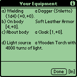
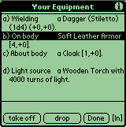
select an item to see that it can be taken off or dropped.. tap Done
Note that these actions take time.
Remember the "exchange" command to save a turn when swapping weapons.
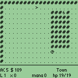
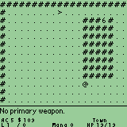
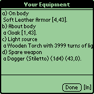
here we try writing x to exchange weapons.. then write e to see equipment
we had a primary and no spare... now we have a spare and no primary,
we could wield a new primary weapon
You can switch from the Equipment to the Inventory screen by
tapping on the "[In]" in the lower right corner.
When you are finished, tap Done.
Preferences
As I mentioned above, there is a Preferences item on the Options
menu which will allow you to set various things, including the size of
those "what am I doing when I tap somewhere" circles.
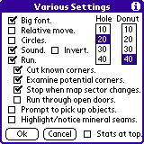
The preferences screen also allows you to:
-
Set the default font size ("big" normal font, or teensy flyspeck font.)
You can still change it at whim with '/F', but it will tend to start out
using the font size you select here.
-
Turn on/off "relative movement". If this is on, the pie/donut is
centered around the @; if this is off, the pie/donut is fixed in place,
centered on the screen.
-
Turn on/off "circles". This is experimental. It will draw the
borders of the movement donut, overlaid on the dungeon view. This
might be helpful or a distraction.
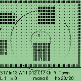
-
Turn on/off sound. There are two places to turn it off. One is "Game
Sound" under "General" in the PalmOS "Prefs" application. (That
will turn off sound for all games that bother to pay attention.) The
other is the "Sound" checkbox you see here. If either one of these is
'off', kMoria will be silent; if you want sound, therefore, they must
both be 'on'. Not that I have actually put any sound into the game yet.
-
Turn on "invert" - if this is on, the background will be black,
and everything in the dungeon will be drawn in white.
-
Turn on "color" - this is only possible (visible) if you've chosen to
define a set of colors.
If it is visible, it will appear below "invert".
-
Turn off "running" altogether, so that you move only one square at
a time no matter how far from the center you tap. Then the following
options will not be of interest.
-
Turn off "cut known corners". When you are running, kMoria is smart
enough to cut corners in twisty passages that you have previously
explored. But maybe you don't want it to.
-
Turn off "examine potential corners". When you are running,
kMoria assumes you do not want to cut a suspected corner in a twisty
passage that you have not previously explored. But maybe you know better.
-
Turn on "stop when map sector changes". When running, this will cause
you to stop running as soon you have run onto the next screen: a cautious
player will turn this option on in case there were monsters just out of sight.
-
Turn on "run through open doors". You may want to stop to close them.
Or, you may want to stop to search (where there is one door, often there
are more doors that are concealed). If you don't want to do these things,
you can turn this option off.
-
Turn on "prompt to pick up objects". If you don't want to pick up
absolutely every object you encounter, you would turn this on.
-
Turn on "highlight mineral seams". This is an option for those who like
digging. It will display the weaker types of mineral as %;
the ones you probably don't want to bother tunneling through are
still #. Watch out for cave-ins.
- You can also move the "stats" bar to the top of the screen.
Not offered: "centered" scrolling to keep the rogue in the center of
the screen. If you have played Unix Moria, you know that
even there the dungeon levels are divided into panels (to fit in your
xterm) and you move about within the panels. Playing on your handheld
is just the same (except that the panels are smaller) so call this
"an authentic experience" and call me "lazy"
Hardware Buttons
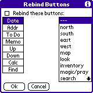
You have the option of rebinding the four application buttons, the
up/down scroll buttons, and the silkscreened calculator and find
buttons. You can rebind some, all, or none. Once you have made some
choices, check the "use these settings" box to turn it on. (If you
ever want to turn the rebinding off temporarily, all you have to do is
uncheck the box. kMoria will remember your settings but won't use
them.)
You have a fixed set of choices for each button. (The dashed
choice you see at the top is "don't rebind this button", i.e. let the
button do whatever it ordinarily would.)
To bind a button: First, select that button (on the left).
Then, select something from the list (on the right). Let's select "Addr" and then select "west".
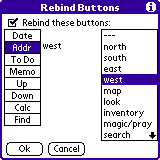
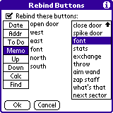
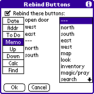
As you can see, "west" appears next to the button that we bound it
to. Thrilled with this accomplishment, we go on to bind the other
directions, and show off a couple of the other bindable commands... (see
second picture in that row).
In the third picture in that row, we see how to unbind a button:
If you want to unbind a button, select it, and then select
"---". We had bound Memo to font, now we unbind it, and so now if we
hit Memo during the game we would just go to the MemoPad application.
Spell Btns
Ok, suppose that you have some hardware buttons bound to some
commands, but you really want to be able to fire off a spell as a
three-button sequence (like you can in regular desktop Moria). Hit
Menu in the dungeon, then hit Set, then select Spell Btns and you will
be in this exciting new screen.
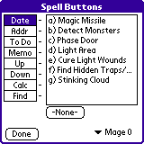
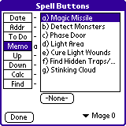
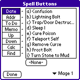
When you are casting spells: The books are already bound to the
four application buttons. How about the spells/prayers in each book?
You get to choose how to bind each particular spell (or whether to
bind it at all).
First, select the button that you wish to bind. Here we select
Memo. Then, select the spell that you want to bind to that button.
Here we select Magic Missile. Then you will see "a" (the index letter
of the spell we selected) appear next to Memo, just as you see in the
second picture. (To unbind the button, select the button, and
then tap on -None-.) Suppose we have bound "Todo" to "magic" in the
Hardware buttons screen: then to cast a magic missile with button
presses, we would hit "Todo" (then the screen of books comes up) then
hit "Datebook" (to select the first book) then hit "Memo" (which is
the step that we just defined here).
(If I lost you on "hit 'Datebook'" I will reiterate: the
four app buttons are bound to spellbooks, in the books screen.
Datebook will select the first book, Address will select the second,
Todo will select the third, Memo will select the fourth. If you have
four.)
What about spells from the other books? In the lower right corner
there is a list of the 8 books. (You can get to this screen no matter
what character class you are playing, and you can bind any spells in
any books, so if you know what the spells do and which ones you find
most useful, go ahead and bind them once and for all.) We started out
on the first Mage book. To get to the next Mage book, tap on the list
in the lower right corner, and select the next item in the popup list.
This changes the spell list - and we see the third picture. We can
bind these spells as desired, and then go on to the next book...
help!
Need help with gameplaying strategy?
You do not understand the language.
You could consult the experts on the Moria
newsgroup.
Screenshots
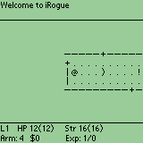